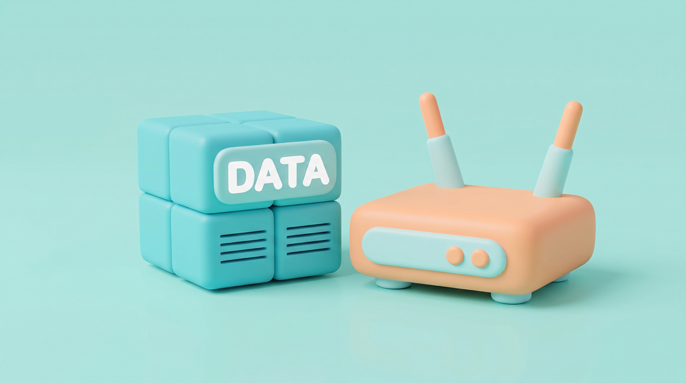
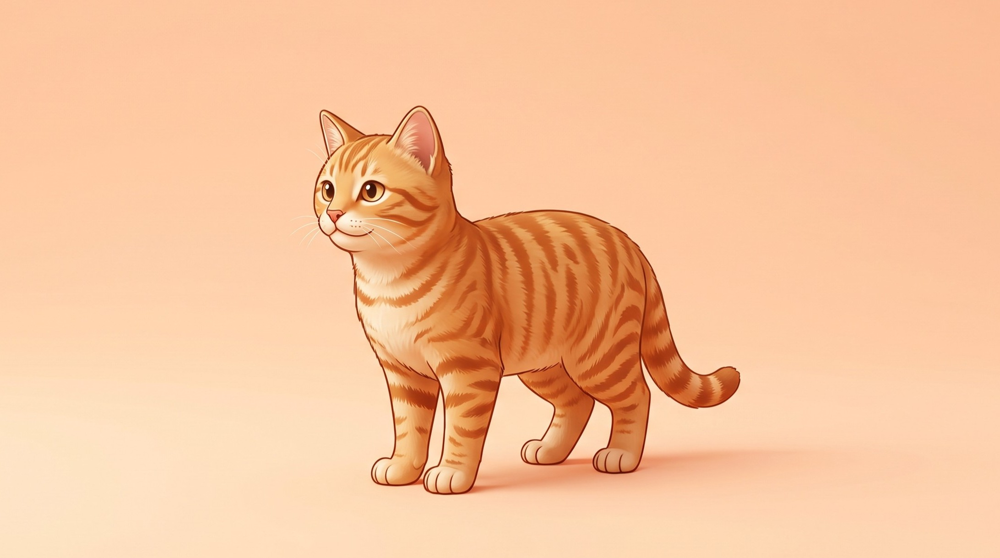

Sistem Komputer Menyelam ke Dalam Mesin Digital
💡 Panduan Singkat Menggunakan Media Pembelajaran Interaktif (MPI)
🧭 Tombol Navigasi
Kembali ke halaman sampul utama (cover) kapan saja.
Membuka menu utama untuk memilih topik materi atau aktivitas.
Berpindah ke materi atau halaman sebelumnya.
Melanjutkan ke materi atau tantangan berikutnya.
🎯 Alur Pembelajaran
Pahami 4 pilar perangkat keras (Von Neumann), perangkat lunak, dan bilangan biner melalui penjelasan visual.
Rakit komputer impianmu di lab virtual dan pecahkan sandi sakelar lampu biner 8-bit.
Uji pemahamanmu lewat 10 soal evaluasi interaktif dan dapatkan rekapitulasi skormu.
Baca ringkasan inti materi, tuliskan refleksi belajarmu, dan selesaikan seluruh pembelajaran.
🎯 Setelah mengikuti pembelajaran interaktif ini, kamu diharapkan mampu:




🖥️ 1. Apa Itu Sistem Komputer?
Sistem Komputer adalah kombinasi terpadu dari Perangkat Keras (Hardware), Perangkat Lunak (Software), dan Pengguna (Brainware) yang bekerja sama mengolah data menjadi informasi berharga.
🏛️ 2. Arsitektur Von Neumann
Hampir seluruh komputer modern (dari laptop hingga smartphone) mengadopsi Model Von Neumann dengan 4 pilar utama:
💡 Analogi Koki Memasak: Bahan mentah masuk melalui Input, dimasak oleh koki di CPU menggunakan meja kerja RAM dan lemari bumbu Storage, lalu disajikan di piring Output!
📦 3. Empat Pilar Perangkat Keras
Berikut adalah 4 kelompok perangkat keras dalam sistem komputasi:
Memasukkan data dan instruksi manusia ke dalam komputer. Contoh: Keyboard, Mouse, Mikrofon, Scanner, dan Layar Sentuh.
Otak komputer yang melakukan perhitungan logika dan matematika. Contoh: CPU (Processor), ALU, dan Motherboard.
Menyajikan hasil pengolahan data agar dapat dipahami manusia. Contoh: Layar Monitor, Speaker, dan Printer.
🧠 1. CPU: Otak Sang Komputer
Central Processing Unit (CPU) mengeksekusi triliunan instruksi per detik. Di dalamnya terdapat dua unit inti:
• ALU (Arithmetic Logic Unit): Mesin hitung yang melakukan operasi matematika (+, -, x, /) dan logika (AND, OR, NOT).
• CU (Control Unit): Dirigen yang mengatur lalu lintas instruksi antar-komponen.
✨ Kecepatan Gigahertz (GHz): Processor 3.5 GHz mampu melakukan 3,5 miliar siklus instruksi dalam 1 detik!
⚡ 2. Pertarungan: RAM vs SSD / Harddisk
Jangan tertukar! Inilah perbedaan mendasar kedua jenis memori ini:
Volatile (Sementara). Tempat menampung aplikasi yang sedang aktif dibuka. Saat komputer dimatikan, seluruh data di RAM hilang seketika. Kecepatannya luar biasa tinggi!
Non-Volatile (Permanen). Lemari berkas untuk menyimpan file tugas, foto, video, dan sistem operasi. Data tetap tersimpan aman walau listrik mati total.
⚙️ 1. Sistem Operasi (Operating System)
Perangkat keras tanpa software hanyalah tumpukan logam mati. Sistem Operasi (OS) adalah perangkat lunak fondasi yang mengelola perangkat keras dan menyediakan antarmuka bagi pengguna.
• Windows & macOS: Standar di laptop dan komputer meja.
• Android & iOS: Standar sistem operasi pada smartphone dan tablet.
• Linux: Banyak digunakan untuk server internet dan keamanan data.
📱 2. Perangkat Lunak Aplikasi
Program yang dirancang spesifik untuk membantu manusia menyelesaikan pekerjaan tertentu:
Contoh: Chrome, Edge, Firefox untuk berselancar di internet.
Contoh: Microsoft Word, Excel, Google Docs untuk mengerjakan tugas sekolah.
Contoh: Canva, Photoshop, dan game edukasi interaktif.
Semua potongan piksel disatukan kembali secara presisi menjadi foto kucing yang utuh dan siap ditampilkan di layar!